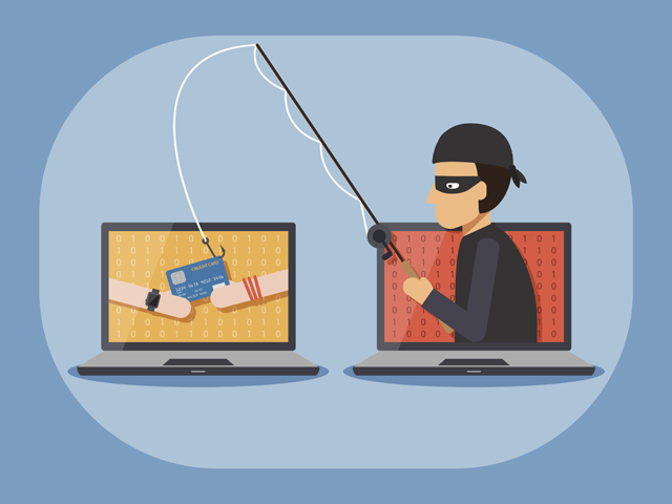
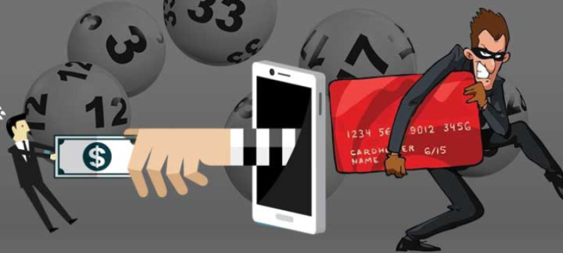
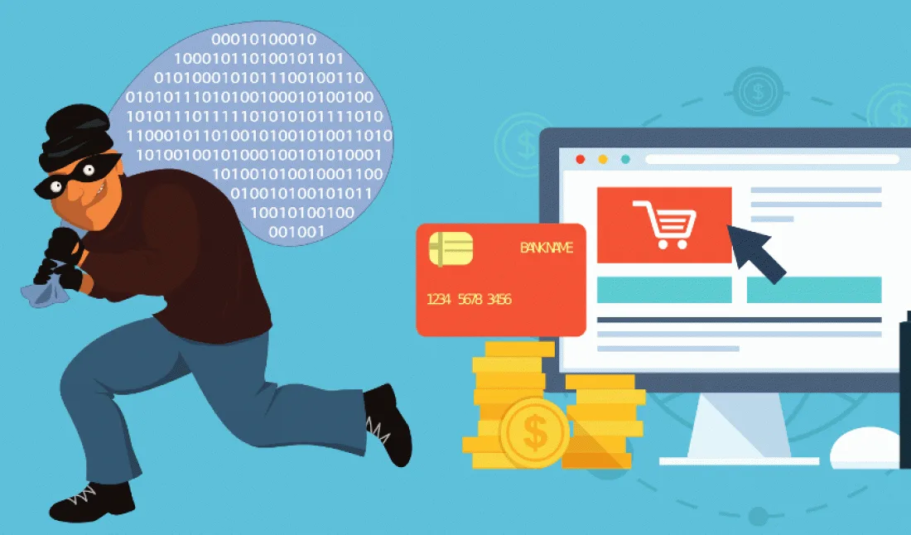
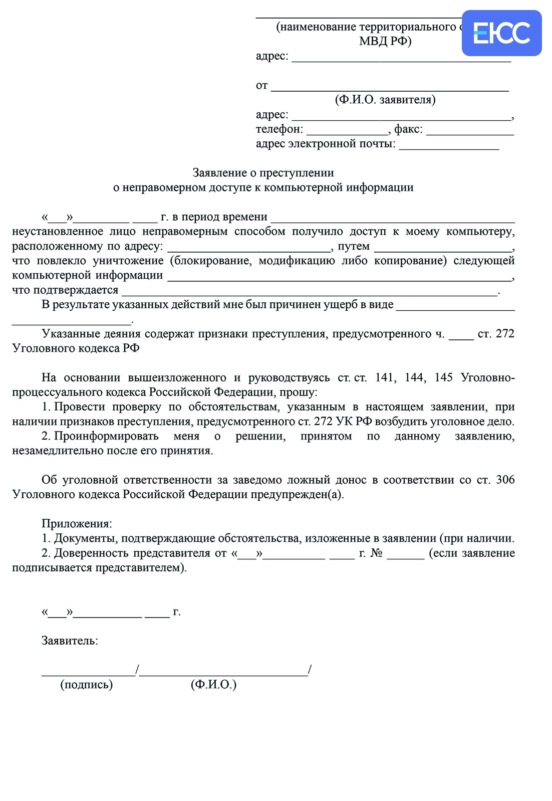
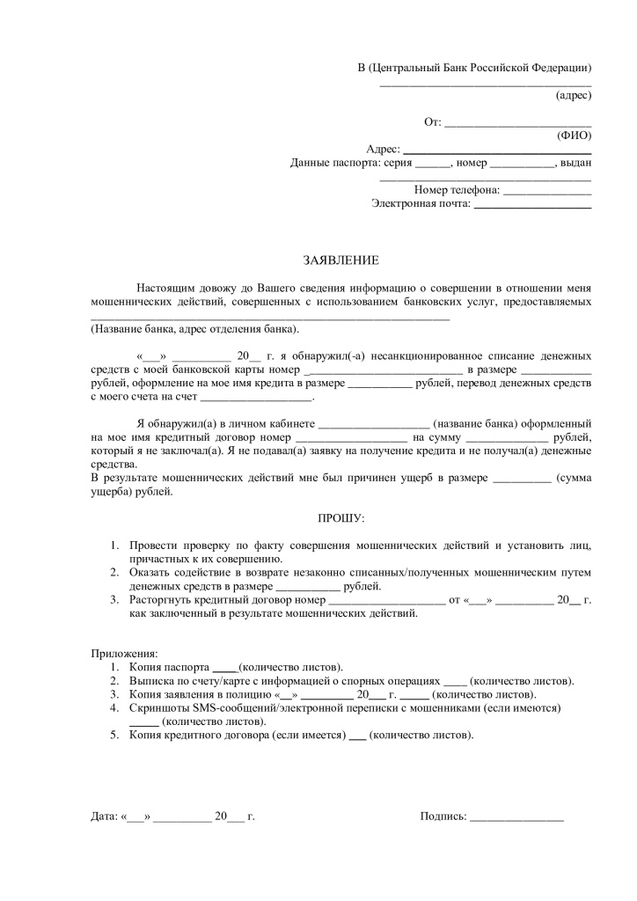

Этот ресурс помогает студентам, родителям, кураторам распознавать мошенические схемы,
правильно защищать свои персональные данные
и покажет куда обращаться в случае необходимости
Предлагают получить «повышенную стипендию» после оплаты комиссии или ввода банковских данных.
От имени знакомого просят срочно перевести деньги или сообщить код.
Обещают высокий доход без опыта, но требуют предварительный взнос.

Мошенничество, при котором злоумышленники пытаются обманом получить конфиденциальные
данные пользователей: логины, пароли,
номера банковских карт, персональные сведения и
другую личную информацию

Распространённая схема обмана, при которой злоумышленники обещают призы
или крупные выигрыши, но на самом деле стремятся получить доступ
к личным данным,
банковским средствам или совершить кражу

Обман при онлайн-покупках может проявляться в разных формах,
и важно
знать о возможных рисках, чтобы их избежать.
Сохраните все доказательства обмана. Сделайте скриншоты переписки или номера мошенника.
Если у мошенника есть доступ к вашей банковской карте, немедленно заблокируйте её и сообщите о произошедшем в банк. Если же у вас украли аккаунт на гос-площадках, сообщите об этом в ближайший МФЦ.
Подайте зявление в полицию. (Шаблоны для подачи в банк и полицию ниже)


Шаблон заявления в полицию
На этом сайте вы можете поместить файл, вставить ссылку или же просто найти нужный сайт в адресной строке на на главной странице и проверить безопасность ресурса.